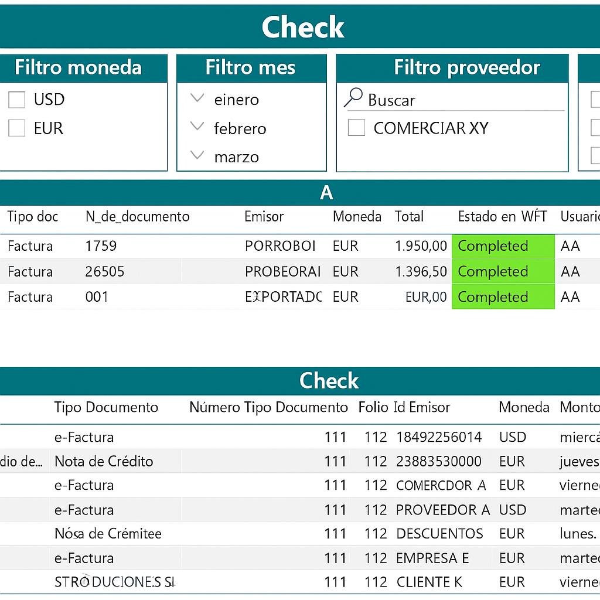
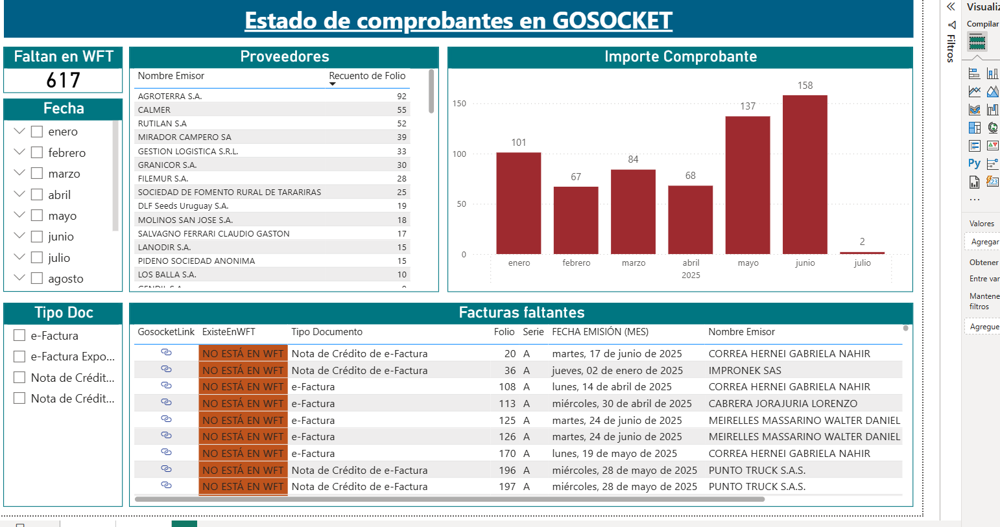

Resumen del Proyecto
Este tablero fue desarrollado para verificar la correcta recepción de las facturas emitidas por proveedores. El proceso compara dos fuentes distintas.
El objetivo principal es detectar discrepancias entre ambos reportes y generar un control claro para asegurar que todas las facturas sean procesadas correctamente para su pago. Se utilizaron medidas DAX personalizadas para comparar el número de factura, proveedor, importe y moneda. También se configuraron indicadores visuales para marcar los diferentes casos.
Adicionalmente, se creó una lógica para mostrar un link al sistema de administración solo cuando la factura está correctamente registrada, evitando errores en la navegación del usuario.
Herramientas Utilizadas
- Power BI
- DAX
- Modelado de Datos